Without loss of generality, we can rotate the reference frame so that
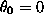
. Furthermore, we can assume that basis functions that are ``close'' to one another have similar or complementary alignment. (This is a reasonable assumption at large Reynolds numbers and is shown to be the case in the nontrivial example of §5.) The term ``close'' means that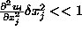
where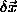
is the displacement between nearby basis functions and i, j denote indices for the cardinal directions. In other words, nearby elements have similar flow deviations . If this were not the case, the flow would be poorly resolved by a simulation.Given that we have a procedure for replacing a collection of computational elements with a single element with a single uniquely determined element, one then must determine a means of gauging the error induced by such an operation. A bound on this error will reveal a means for determining collections that will induce small errors and ultimately reveal a practical algorithm for merging elements together. Referring to (2.5), we shall replace a collection of n elements,
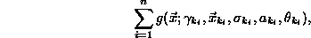
with a single coarsened element
We refer to this element as coarsened because the number of degrees of freedom in the simulation has been reduced in this region of the flow. Given a collection of overlapping elements, the parameters for the coarsened element is completely determined, and without loss of generality, we can translate and rotate our coordinate system so that
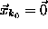
and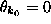
. From this point on, the k's shall be dropped and the subindices shall be used exclusively. The difference,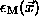
, between the vorticity field described by the originating collection of elements and that of the coarsened element is
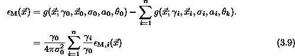
where
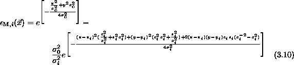
If we restrict collections of elements to those whose circulations have the same sign, we observe that
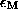
is merely an 0 mean of functions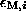
. Understanding and bounding the merging process can be reduced to understanding and bounding which represents a simple pairwise comparison.The function can be written as the sum of three functions that can be conveniently analyzed:
where
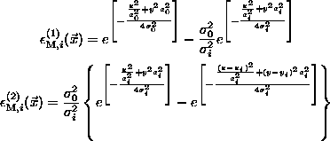
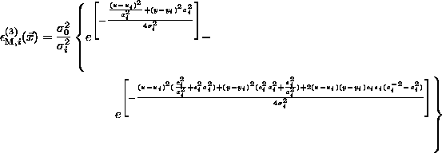
The three components of the error term can be attributed individually to distortion from circular to elliptical, displacement and misalignment, respectively.
The first function,
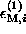
, is merely the difference between a circular and elliptical Gaussian. By inspection, extreme values must occur along the coordinate axes. The independent variables and parameters can be rescaled without altering the magnitudes of the extreme values of :So that,
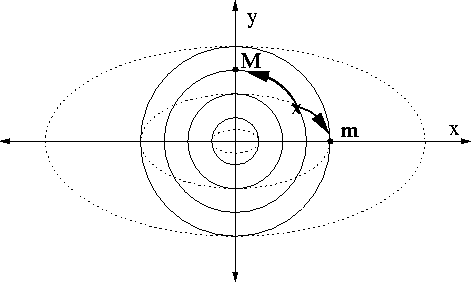
The exponential decay of the constituent functions guarantees that relative extrema will be global extrema. Though one can determine the relative extrema by setting the gradient equal to zero and eliminating various possibilities, it is simpler to examine the function first at which time one sees that the extreme values must occur on the coordinate axes (see Fig. (3.1)).
The first relative extrema of interest is at (0,0). In this case,
Relative extreme values along the -axis occur when
The solution to this equation is
If
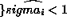
, any value of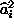
will yield a real solution to this equation. However, if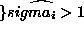
, solutions only exist when
in order for the right hand side of (3.16) to be negative.
Substituting this back into and observing that
one finds a second relative extreme value of to be
For the other extrema, we seek values of such that
Avoiding the solution at the origin, we find that the relative extrema occurs when
Similar to the previous case, real solutions exist for all if . If , solutions are restricted to the parameter space
Substituting this back into and observing that
one finds a third candidate for a global extrema:
Thus, we have the following uniform bound on ,
Again, we seek a fast and simple way of bounding the merger induced error by inspecting a collection of elements. The upper bound plays a role in making a decision whether or not the replace the collection with a single element. By limiting the range of values of and in the collection, we can bootstrap an a priori upper bound on the merger error for the collection.
The two extrema candidates, (3.17) and (3.20), can be reduced further through the following observation: Both expressions have the form
where for (3.17) and for (3.20), and for either extrema. To understand the behavior of f as the variables vary, we note that
To apply these results, we anticipate bounding both and in some neighborhood of unity. Observing that both and must be positive, we find that the second term in the gradient is monotonically directed toward increasing , thus one would expect extreme values of f to occur when is either at its upper or lower allowable value. The first term is more complex. Relative extrema could be when , and presumably this can occur in the interior of the region of allowable values for . However, if then which reduces to the first extreme value (3.14). This establishes our first theorem.
In the case of , one can rescale the independent variables again,
so that
Now, we can rotate the coordinate system by so that
where
We can expand the in the above form as a power series in to obtain
where is the Hermite polynomial. Observing that
where (see [1]), we can see that this bound diminishes for , and for , this series converges absolutely. Taking the first term as an approximation and observing that
we obtain the following bound on :
The third and last component, , is dependent upon the unknown orientation of the computational elements. The orientations of elements is driven by the flow, so it is difficult to analyze these quantities locally. If we translate the origin to and rescale
we find that
By inspection, a worst case occurs when and . That is to say, the two elliptical elements are arranged orthogonally to one another. This worst case is bounded by
The inspection, the extreme values of the function on the right will occur when or . By symmetry, it does not matter which axis one chooses. Without loss of generality, we choose . Seeking local extrema again as in for , we find that
It should be observed however that for high Reynolds number flows, the contribution from will be very small because basis functions will align themselves with the local flow deviations. Thus, in a small area, one observes that nearby elements are aligned with one another. We have just established a uniform upper bound which is stated in unscaled variables as follows
The two theorems presented in this section provide the foundation for an effective merging algorithm, but there is a fundamental weakness because the error depends implicitly on the zeroth, first and second moments of the the configuration of elements. Thus, one must calculate the parameters for the post-merger element before one can know whether or not the error is acceptable. In the forthcoming merging algorithm, this issue is addressed two different ways yielding minor variations on the same general technique.